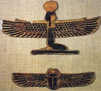

Нут, в єгипетській міфології богиня неба, дочка бога повітря Шy і богині вологи Тефнут, сестра-близнюк бога землі Геба. Нут є одним з божеств геліопольським Еннеад. У найдавніших уявленнях єгиптян Нут була небесної коровою, яка народила сонце і всіх богів. Як захисниця і покровителька мертвих, підносить їх на небо, богиня часто зображувалася на саркофагах.
Всупереч волі Ра Нут вийшла заміж за брата. Ра так сильно розгнівався, що наказав Шу розділити близнюків. Шy підняв Нут вгору - так утворилося небо, а Геба залишив внизу - так утворилася земля. Лють Ра була велика, і він повелів, щоб Нут не могла зачати дитя ні в один з місяців року.
Бог Той пожалів її. Він запросив місяць зіграти з ним в шашки, здобув перемогу і взяв в якості призу місячне світло, щоб створити п'ять нових днів. У кожен з цих днів Нут зачинати дитя: Осіріса, Мережі, Ісіда, Нефтиду і Гора. Інший міф розповідає про те, як Нут допомогла Ра віддалитися від людей, коли він розчарувався в їх діяннях. Прийнявши образ корови, вона посадила Ра собі на спину і стала підніматися в небо. Але чим вище вона піднімалася, тим більше кружляла її голова, і oнa закликала чотирьох богів, щоб ті тримали її ноги. Ці боги і стали стовпами небесними. Нут називали "величезною матір'ю зірок, народжує богів".